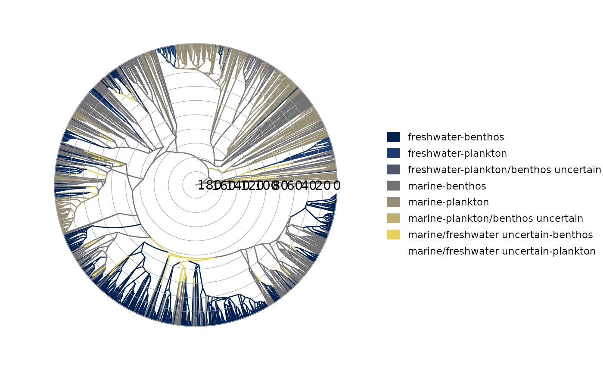
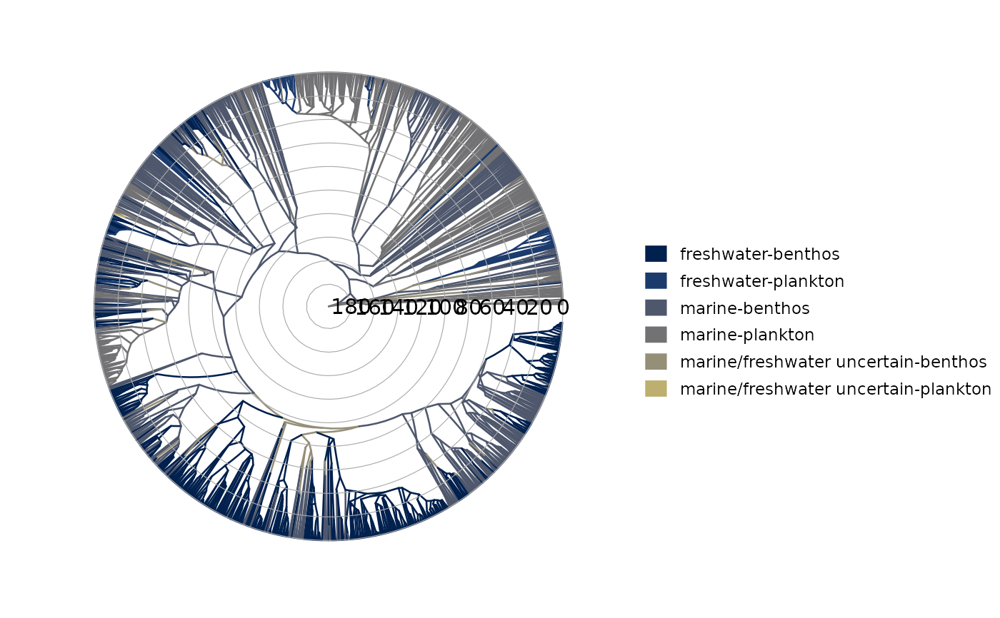
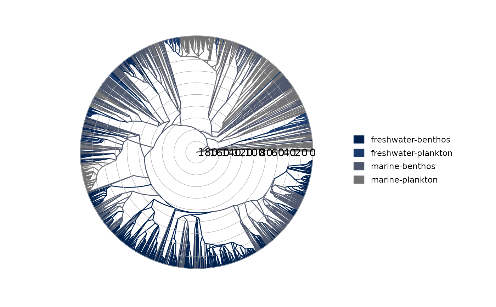
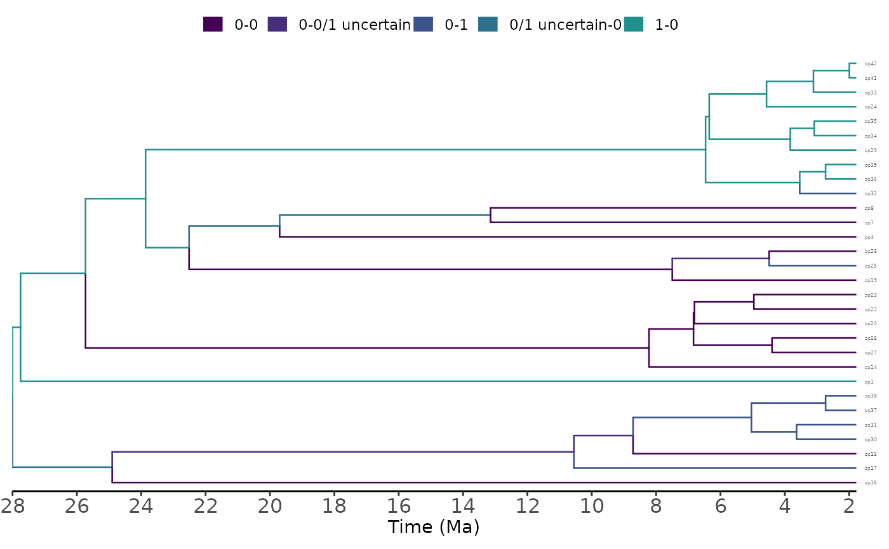
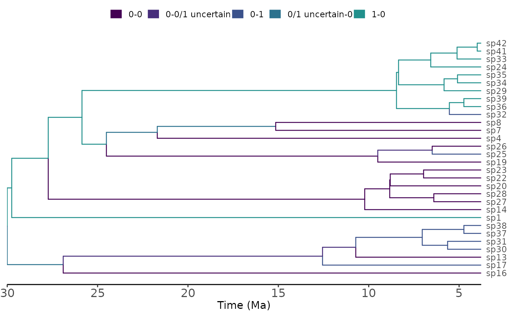

R/utilhisse.R
m_trait_recon.RdA function to plot a MuHiSSE (model-averaged) marginal ancestral reconstruction for the trait data.
m_trait_recon( processed_recon, show_tip_labels = FALSE, cutoff = c(0.2, 0.2), states_of_first_character, states_of_second_character, tree_layout = "rectangular", tree_direction = "right", time_axis_ticks = 10, open_angle = 10, colors = viridis(n = 9) )
| processed_recon | An object produced by |
|---|---|
| show_tip_labels | Logical, whether to plot tip labels. Default is FALSE because it is difficult to plot legible tip labels for larger trees common in this type of analysis. See |
| cutoff | A vector of length 2 giving the values for discretizing the reconstructed probabilities for the first and second character. Categories "0", "uncertain", or "1" are assigned to probabilities |
| states_of_first_character | Translation for the character states |
| states_of_second_character | Translation for the character states |
| tree_layout | A layout for the tree. Available options are 'rectangular' (default), 'slanted', 'circular', 'fan' and 'radial'. |
| tree_direction | 'right' (default), 'left', 'up', or 'down' for rectangular and slanted tree layouts |
| time_axis_ticks | numeric giving the number of ticks for the time axis (default=10). Passed on to |
| open_angle | The degrees of empty space between the first and last tip. Only works for |
| colors | A vector of colors for the character states. Note that the number of categories depends on the cutoff value. Internally this vector of colors is subset to |
A plot of the phylogeny with branches colored by muhisse-inferred marginal ancestral states.
data("diatoms") processed_muhisse <- m_process_recon(muhisse_recon=diatoms$muhisse_recon) cols = c("#00204DFF", "#1B3B6DFF", "#4E576CFF", "#727274FF", "#958F78FF", "#BCAF6FFF", "#E7D159FF") # eight categories after binning with a cutoff of 0.2 m_trait_recon( processed_recon = processed_muhisse, cutoff = c(.2, .2), states_of_first_character = c("marine", "freshwater"), states_of_second_character = c("plankton", "benthos"), tree_layout = "radial", colors = cols)#>#> # A tibble: 8 x 2 #> # Groups: four_state [8] #> four_state n #> <chr> <int> #> 1 freshwater-plankton 131 #> 2 marine-plankton 553 #> 3 marine-benthos 764 #> 4 freshwater-benthos 760 #> 5 marine/freshwater uncertain-benthos 51 #> 6 freshwater-plankton/benthos uncertain 1 #> 7 marine/freshwater uncertain-plankton 1 #> 8 marine-plankton/benthos uncertain 2# three of these eight have < 3 nodes, so we could try to avoid plotting some of them # adjust the cutoff for the second variable m_trait_recon( processed_recon = processed_muhisse, cutoff = c(.2, .3), states_of_first_character = c("marine", "freshwater"), states_of_second_character = c("plankton", "benthos"), tree_layout = "radial", colors = cols)#>#> # A tibble: 6 x 2 #> # Groups: four_state [6] #> four_state n #> <chr> <int> #> 1 freshwater-plankton 132 #> 2 marine-plankton 553 #> 3 marine-benthos 766 #> 4 freshwater-benthos 760 #> 5 marine/freshwater uncertain-benthos 51 #> 6 marine/freshwater uncertain-plankton 1# ignoring uncertainty m_trait_recon( processed_recon = processed_muhisse, cutoff = c(.5, .5), states_of_first_character = c("marine", "freshwater"), states_of_second_character = c("plankton", "benthos"), tree_layout = "radial", colors = cols)#>#> # A tibble: 4 x 2 #> # Groups: four_state [4] #> four_state n #> <chr> <int> #> 1 freshwater-plankton 132 #> 2 marine-plankton 554 #> 3 marine-benthos 795 #> 4 freshwater-benthos 782#'# Plotting tip labels # for better control over font size, justification, alignment, and offset # use show_tip_labels= FALSE and add the tip labels manually # # for example require("ape") data("diatoms") x <- m_process_recon(diatoms$`3state_musse_recon`) # the defaults work poorly m_trait_recon(processed_recon = x, show_tip_labels= TRUE, states_of_first_character = c("0", "1"), states_of_second_character = c("0", "1"))#>#> # A tibble: 5 x 2 #> # Groups: four_state [5] #> four_state n #> <chr> <int> #> 1 1-0 24 #> 2 0-0 19 #> 3 0-1 10 #> 4 0-0/1 uncertain 3 #> 5 0/1 uncertain-0 3#> #># manual setup is better basic_plot <- m_trait_recon( processed_recon = x, show_tip_labels= FALSE, states_of_first_character = c("0", "1"), states_of_second_character = c("0", "1"), time_axis_ticks = 8 )#>#> # A tibble: 5 x 2 #> # Groups: four_state [5] #> four_state n #> <chr> <int> #> 1 1-0 24 #> 2 0-0 19 #> 3 0-1 10 #> 4 0-0/1 uncertain 3 #> 5 0/1 uncertain-0 3# extract the data component from the ggplot object # we'll need it to order the tip labels plot_data <- basic_plot$data %>% filter(isTip == TRUE) %>% # we need the tips only, no nodes arrange(y) # sort numerically basic_plot + #now add an axis to the right scale_y_continuous(position = "right", breaks = plot_data$y, labels = plot_data$label) + # enable the axis text, but disable the line and ticks marks # move the legend out of the way theme( legend.position = "top", axis.ticks.y = element_blank(), axis.line.y = element_blank(), axis.text.y = element_text(face = "italic") )#> #>